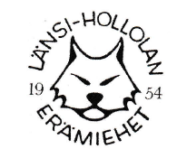

Metsästystä, riistanhoitoa ja luonnossa liikkumista yhdessä.
Liity mukaanLänsi-Hollolan Erämiehet ry on metsästysseura, joka edistää vastuullista metsästystä, riistanhoitoa, luonnon kunnioittamista ja turvallista yhdessä tekemistä.
Yhdistyksen tarkoituksena on edistää kestävää ja eettistä metsästystä, huolehtia riistakannoista ja niiden elinympäristöistä sekä vahvistaa jäsentensä luonnontuntemusta, metsästystaitoja ja yhteisöllisyyttä. Toimintamme perustuu luonnon arvostamiseen, turvallisuuteen, vastuullisuuteen ja vapaaehtoistyöhön.
Järjestämme jäsenillemme ja paikallisen luonnon hyväksi monipuolista, yleishyödyllistä toimintaa. Toimintaamme kuuluvat muun muassa:
Yhdistyksen toiminnasta saatavat varat käytetään yhdistyksen tarkoituksen mukaiseen toimintaan, eikä toiminnalla tavoitella voittoa jäsenille.
Puheenjohtaja: Olli Kaikkonen
Puhelin: +358 500 200 005
Sähköposti: olli.kaikkonen@lansihollolaneramiehet.fi
Sihteeri: Satu Siikaniemi
Puhelin: +358 44 363 4968
Sähköposti: satu.siikaniemi@lansihollolaneramiehet.fi